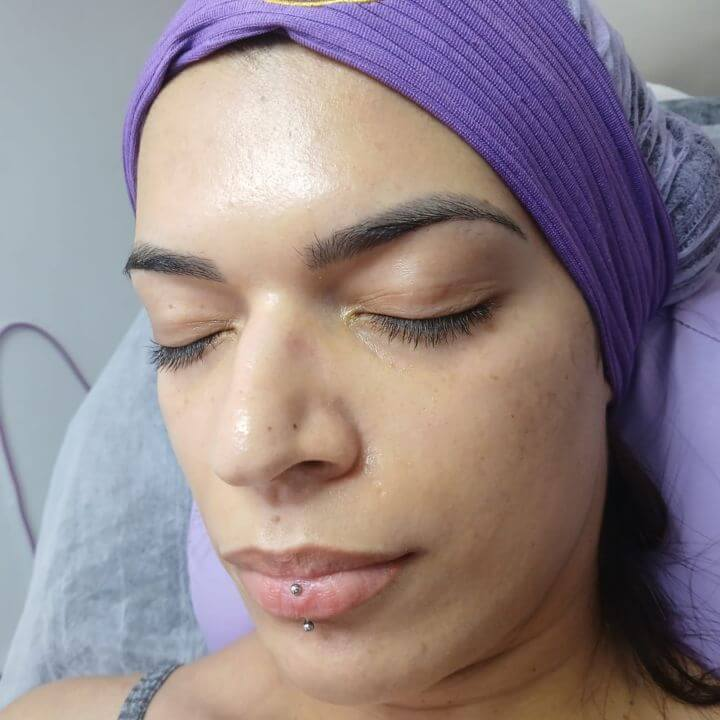
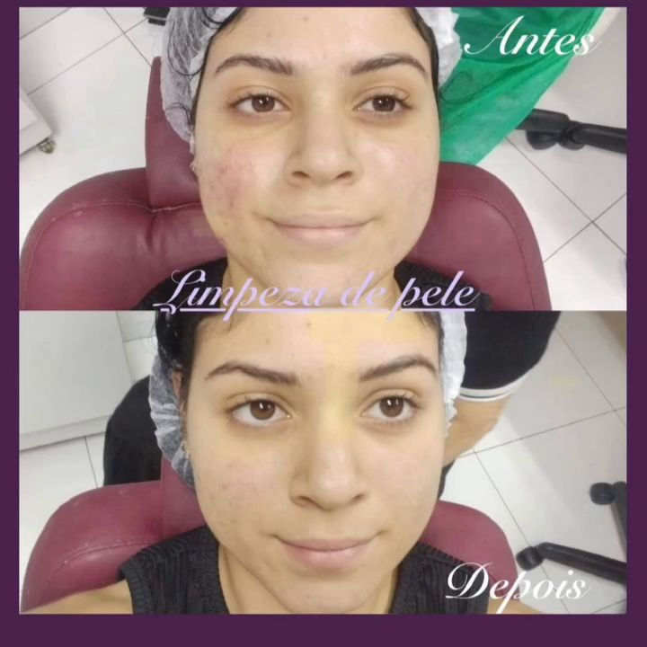
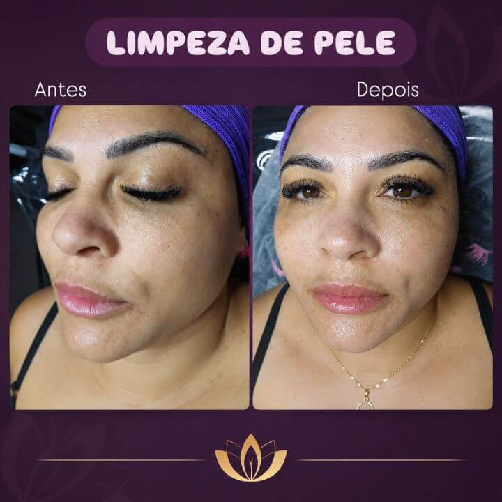
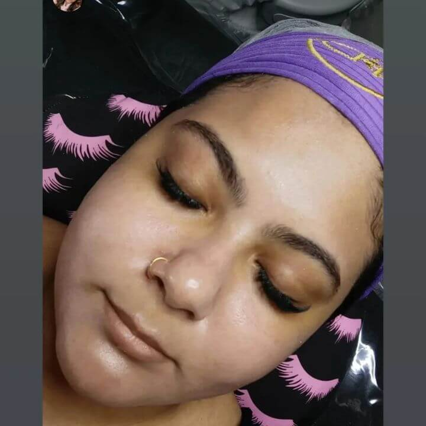
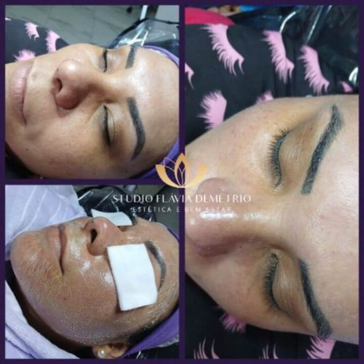
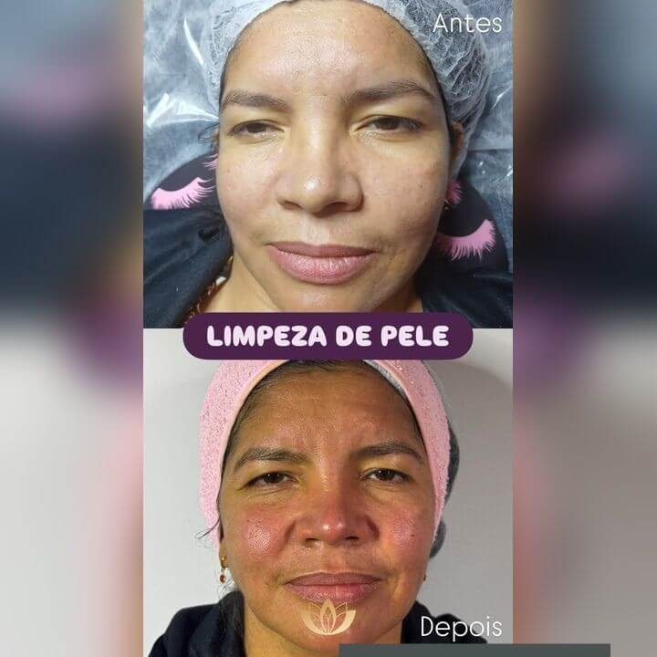
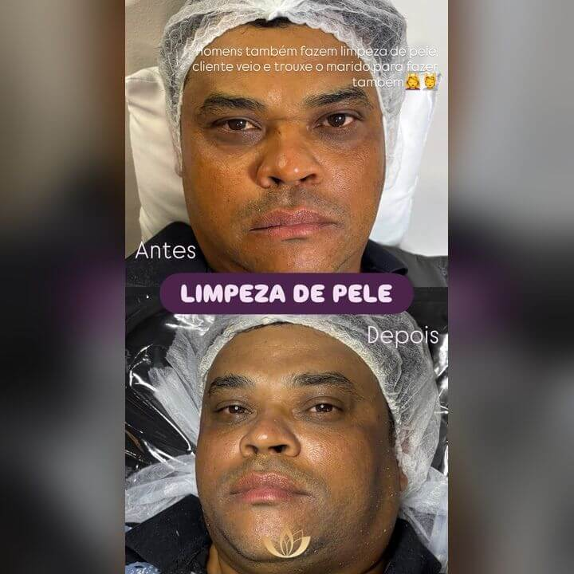

O que é limpeza de pele em Paulicéia?
Você sente que sua pele está oleosa, com cravos ou com aspecto opaco? A limpeza de pele é um procedimento estético que ajuda a remover impurezas, células mortas e o excesso de oleosidade, contribuindo para uma pele com aparência mais limpa e cuidada.
Mesmo lavando o rosto diariamente, alguns resíduos e cravos podem permanecer nos poros. Por isso, os cuidados profissionais podem complementar a rotina de higienização em casa, respeitando as características e as necessidades de cada tipo de pele.
Eu sou Flávia, esteticista, e realizo limpeza de pele no meu Studio Flávia Demétrio Estética e Bem-Estar, em Paulicéia, São Bernardo do Campo. Meu objetivo é oferecer um atendimento personalizado, com cuidado e atenção às necessidades da sua pele.
Quer cuidar melhor do seu rosto? Entre em contato comigo e agende seu horário. Será um prazer receber você no meu espaço.
Agendar minha limpeza de pele
Para quem é indicada
A limpeza pele serve para praticamente todos os tipos de pele, mas é especialmente recomendada para:
- Pessoas com cravos: ajuda a remover cravos abertos e fechados, conforme a avaliação da pele.
- Pele oleosa: auxilia na remoção do excesso de oleosidade e das impurezas acumuladas.
- Pessoas com poros obstruídos: contribui para desobstruir os poros e melhorar o aspecto da pele.
- Quem usa maquiagem frequentemente: ajuda a remover resíduos acumulados, complementando os cuidados diários.
- Pessoas com a pele sem viço: a remoção de células mortas pode deixar a pele com aparência mais uniforme e renovada.
- Homens que desejam cuidar da pele: ajuda a remover cravos e impurezas, controlar a oleosidade e manter a pele limpa, inclusive em áreas com pelos da barba, conforme a avaliação estética.
Benefícios da limpeza de pele São Bernardo do Campo na Paulicéia,sp
A limpeza de pele pode ser procurada por diferentes motivos. Algumas pessoas querem cuidar da oleosidade, outras desejam remover cravos ou simplesmente reservar um momento para cuidar do rosto.
Ajuda a controlar a oleosidade excessiva do rosto
Ajuda a prevenir rugas e linhas de expressão
Ajuda a melhorar a aparência de cravos
Ajuda a deixar a pele mais luminosa e com aparência menos opaca
Antes e depois da limpeza de pele em São Bernardo do Campo na Paulicéia





Studio Flávia Demétrio Estética e Bem Estar
O Studio Flávia Demétrio Estética e Bem Estar está localizado em Paulicéia, São Bernardo do Campo – SP. Se você mora em Paulicéia ou em bairros próximos e está pesquisando por limpeza de pele perto de mim, entre em contato com o estúdio para saber mais sobre o atendimento.
Endereço: R. M.M.D.C., 276 - Paulicéia, São Bernardo do Campo - SP, 09690-000
Perguntas sobre a limpeza de pele
Qual o valor da limpeza de pele em Paulicéia?
O valor da limpeza de pele em Paulicéia, São Bernardo do Campo, pode variar de acordo com o tipo de procedimento e as necessidades da pele. Para saber o valor atualizado e consultar os horários disponíveis, entre em contato com o Studio Flávia Demétrio Estética e Bem Estar pelo WhatsApp.
A limpeza de pele remove cravos?
Sim. A limpeza de pele inclui a extração de cravos e a remoção de impurezas acumuladas nos poros. O resultado depende do tipo de pele e da frequência dos cuidados.
A limpeza de pele é indicada para pele oleosa?
Sim. Quem tem pele oleosa ou mista costuma acumular mais impurezas e cravos, e por isso pode se beneficiar da limpeza. Na avaliação, o procedimento é adaptado às características da sua pele.
Quanto tempo dura uma sessão de limpeza de pele?
A duração pode variar conforme as necessidades da pele. Ao agendar pelo WhatsApp, você recebe a informação do tempo previsto para o seu atendimento.
Posso fazer limpeza de pele regularmente?
Sim. A frequência ideal depende do tipo de pele e da necessidade de cada pessoa. Durante o atendimento, a Flávia orienta qual intervalo faz mais sentido para você.
A limpeza de pele dói?
A maioria das pessoas sente um leve desconforto em alguns momentos, principalmente na extração de cravos, e a sensibilidade varia de pessoa para pessoa. O atendimento é feito com cuidado e respeitando o seu limite.
Onde fazer limpeza de pele em São Bernardo do Campo?
O Studio Flávia Demétrio Estética e Bem Estar atende em Paulicéia, São Bernardo do Campo – SP. Chame no WhatsApp para agendar o seu horário.
Sua pele está precisando de um cuidado especial?
Reserve um momento para cuidar de você. Consulte o valor atualizado e verifique os horários disponíveis no Studio Flávia Demétrio Estética e Bem Estar.
Agendar pelo WhatsApp